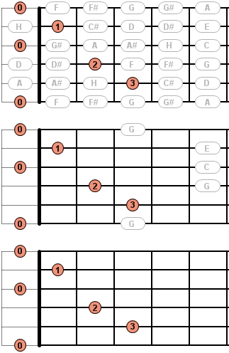

Bei den Benutzervorgaben zu der Griffbrett-Sicht kannst du folgende Einstellungen treffen:
Hier kannst du definieren, welche zusätzlichen Informationen bzw. Hinweise im oberen Bereich der Sicht eingeblendet werden sollen.
Hier kannst du definieren, wie der Hintergrund des Griffbretts dargestellt werden soll. Dabei kannst du zwischen verschiedenen Farben oder Holzmustern wählen aber auch keinen Hintergrund definieren.
Hier kannst du einstellen, ob die Noten der leeren Saiten sowohl am Anfang als auch am Ende des Griffbretts angezeigt werden soll. Ist diese Option deaktivert, werden die Noten der leeren Saiten nur am Anfang des Griffbretts angezeigt.
Hier kannst du einstellen, ob ein Barregriff als Balken dargestellt werden soll oder nicht.

Hier kannst du einstellen, ob auch unbenutzte Noten auf dem Griffbrett angezeigt werden sollen. Unbenutzte Noten sind Noten, welche bei einem dargestellten Akkord oder einer dargestellten Skala nicht benötigt werden.
Hast du im vorigen Punkt definiert, dass unbenutzte Noten ausgeblendet werden sollen, so kannst du hier die obige Einstellung für dargestellte Akkorde noch ein wenig abändern. Mit dieser Einstellung kannst du noch unbenutzte Noten einblenden, welche in dem Akkord vorkommen. Wenn du also gerade einen C-Dur Akkord darstellst, welcher sich ja aus den Noten C-E-G zusammensetzt, so werden nun alle Noten C-E-G auf dem Griffbrett dargestellt.

Hier kannst du einstellen, ob unbenutzte Noten mit einer grauen oder schwarzen Schriftfarbe dargestellt werden sollen.
Hier kannst du die Intarsien, welche über dem Griffbrett dargestellt werden, ein- und ausblenden.
Hier kannst du die Bundnummern, welche unterhalb des Griffbretts dargestellt werden, ein- und ausblenden.
Hier kannst du definieren, wie die Bundnummern unterhalb des Griffbretts dargestellt werden sollen. Du hast hier die Auswahl zwischen arabischen (1, 2, 3, 4, ...) und römischen Ziffern (I, II, III, IV, ...).